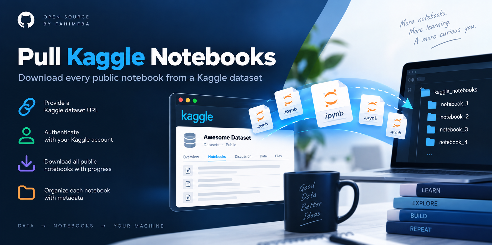

↓
Bulk downloads
Download every public notebook attached to the dataset you provide.
Download the notebooks attached to a Kaggle dataset, keep their metadata, and explore them locally — without downloading them one by one.

Pull Kaggle Notebooks turns a repetitive browsing-and-downloading task into a simple local workflow.
Download every public notebook attached to the dataset you provide.
Use your Kaggle username and API key to access the notebook listings.
Keep notebook metadata alongside each downloaded notebook for easier exploration.
See what is happening while notebooks are being discovered and downloaded.
Paste a Kaggle dataset URL or use its owner/dataset slug.
Provide the Kaggle username and API key from your Kaggle account.
The tool finds public notebooks and downloads them with progress feedback.
Each notebook gets its own folder with the notebook and metadata.
Clone the repository, install its dependencies, then run the script. It will prompt you for the dataset and credentials.
Read the full documentation on GitHub →$ git clone https://github.com/FahimFBA/pull-kaggle-notebooks.git
$ cd pull-kaggle-notebooks
$ pip install -r requirements.txt
$ python pull_kaggle_notebooks.py
# Enter your dataset, Kaggle credentials,
# and output directory when prompted.Useful when you want to study how different people approach the same data.
Have an idea, found a bug, or want to improve the workflow? Contributions are welcome.